F5 Identity and Access Management Solutions > 300 Series: Advanced Use Cases & Solutions Source | Edit on
Lab 1: Implement C3D with APM Enhancements¶
Expected time to complete: 1 hour
Task 1 - Setup Lab Environment¶
To access your dedicated student lab environment, you will need a web browser and Remote Desktop Protocol (RDP) client software. The web browser will be used to access the Unified Demo Framework (UDF) Training Portal. The RDP client will be used to connect to the jumphost, where you will be able to access the BIG-IP management interfaces (HTTPS, SSH).
Click DEPLOYMENT located on the top left corner to display the environment
Click ACCESS next to jumpbox.f5lab.local

Select your RDP resolution.
The RDP client on your local host establishes a RDP connection to the Jump Host.
- Login with the following credentials:
- User: f5lab\user1
- Password: user1
After successful logon the Chrome browser will auto launch opening the site https://portal.f5lab.local. This process usually takes 30 seconds after logon.
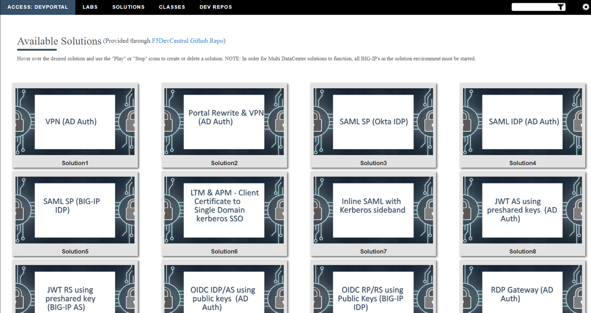
Click the Classes tab at the top of the page.
Scroll down the page until you see 302 Ephemeral Authentication on the left
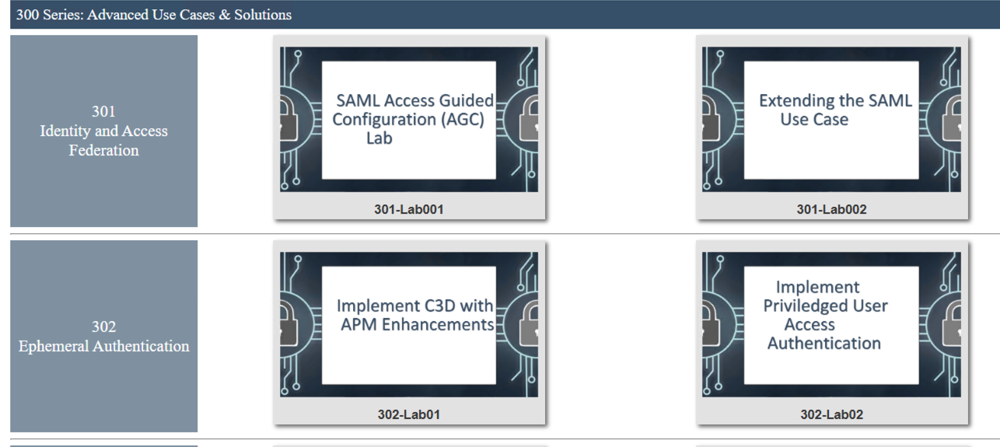
Hover over tile Implement C3D with APM Enchancements. A start and stop icon should appear within the tile. Click the Play Button to start the automation to build the environment
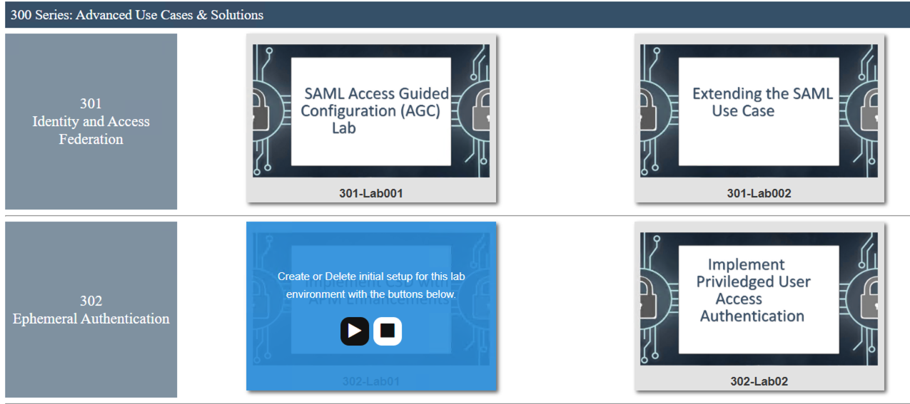
The screen should refresh displaying the progress of the automation within 30 seconds. Scroll to the bottom of the automation workflow to ensure all requests succeeded. If you you experience errors try running the automation a second time or open an issue on the Access Labs Repo.
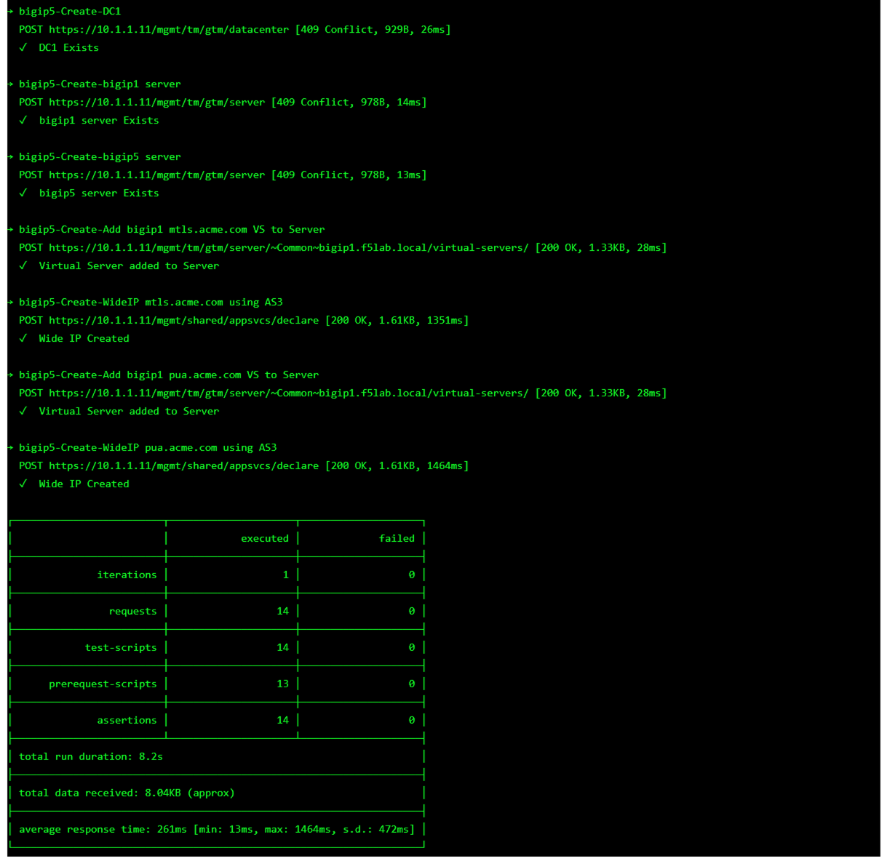
Task 2 - Create an Active Directory AAA Object¶
The first step in deploying CertSSO is creating the objects required for the user to authenticate to APM. In this lab, the user will authenticate via Active Directory and simulated MFA via RADIUS. The user’s authentication method to APM is independent of how the BIG-IP authenticates the user to the backend server for Single-Sign-On. This allows an organization to choose an authentication scheme that matches their needs such as SAML, OAuth, or other method.
Navigate to Access >> Authentication >> Active Directory, then click the + (plus symbol) to create a new AAA object

Enter the following information for the AD Authentication Object
- Name: ad_servers
- Domain Name: f5lab.local
- Domain Controller Pool Name: ad_pool
- Domain Controller IP address: 10.1.20.7
- Domain Controller Hostname: dc1.f5lab.local
- Admin name: admin
- Admin Password: admin
Click Finished
Task 3 - Create a RADIUS AAA Object¶
Navigate to Access >> Authentication >> RADIUS, then click the + (plus symbol) to create a new AAA object

Enter the following information for the Radius Authentication Object
- Name: radius_servers
- Server Pool Name: radius_pool
- Server Addresses: 10.1.20.8
- Secret password: secret
Click Finished
Task 4 - Create the cert_sso Access Profile¶
In this section, you will create the APM Access Profile.
Navigate to Access >> Profile/ Policies >> Access Profile(Per-Session Policies), then click the + (plus symbol) to create a new Access Profile

Enter the Name cert_sso
Select the profile Type All from the dropdown
Scroll to the bottom of the profile settings to set the default language to English
Click Finished

Task 5 - Create the Access Policy¶
In this section, edit the policy using the Visual Policy Editor to enable users to login via AD+MFA, then transition to CertSSO.
On the cert_sso profile line click edit under Per-Session Policy

Click the + (plus symbol) located on the fallback branch located between the Start and Deny boxes

Click the Logon Tab
Select Logon Page
Click Add Item

Add an additional field to the logon page by selecting password from the Type dropdown (line 3)
Enter OTP for Post Variable Name
Enter OTP for Session Variable Name
Enter OTP for Logon Page Input Field #3
Click Save

Click the + (plus symbol) located on the fallback branch located between the Logon Page and Deny boxes

Click the Authentication tab
Select RADIUS Auth
Click Add Item

Select radius_servers from the AAA Server dropdown box
Change the password source to %{session.logon.last.OTP}
Click Save

Click the + (plus symbol) located on the Successful branch located between RADIUS Auth and Deny boxes

In the Authentication tab, select AD Auth
Click Add Item

Select ad_servers from the Server dropdown box
Click Save
Click the + (plus symbol) located on the Successful branch located between AD Auth and Deny box
Click Add Item

In the Assignment tab, select Variable Assign
Click Add Item

Click Add new entry
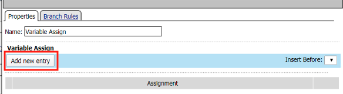
Click change
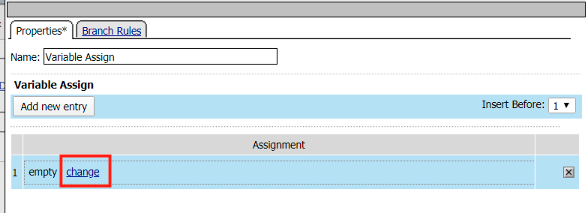
Enter session.ssl.cert.whole in the custom variable field

Locate the F5CertSSO.f5lab.local.txt file in the C:\access-labs\class3\module2\student_files directory.
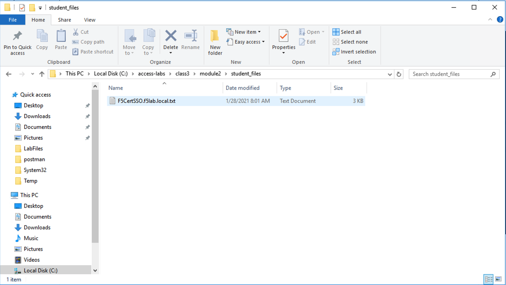
Open the file with notepad++ and copy the contents of the file
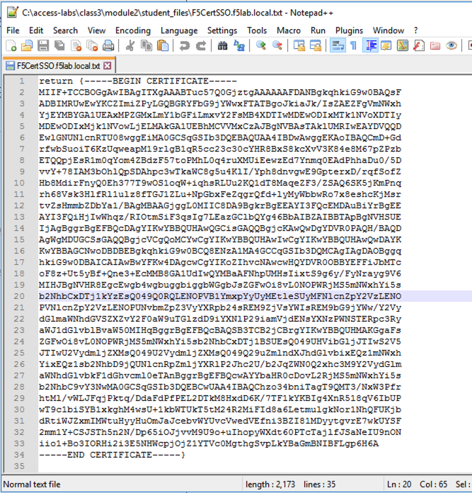
Return to the Visual Policy Editor and paste the certificate into the custom expression field
Click Finished
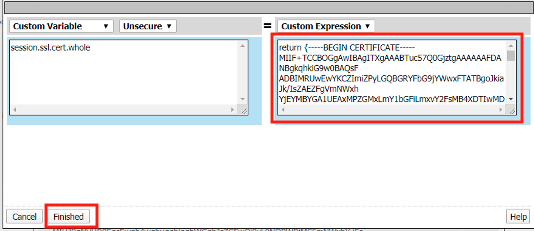
Click Save
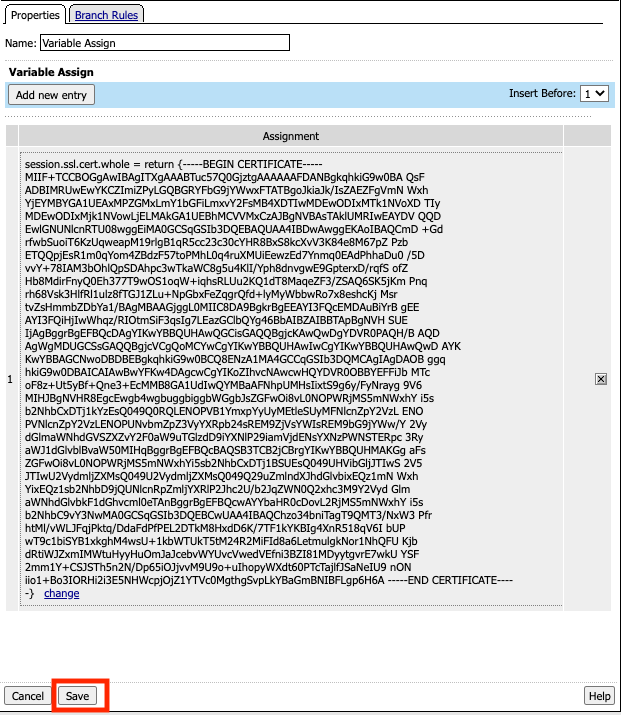
Click the Deny ending icon located on the fallback branch of the Variable Assign agent

Click Allow
Click Save
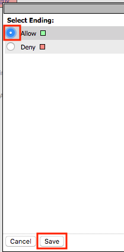
Click Apply Access Policy located in the top left corner to commit the policy changes
Task 6 - Create a Client SSL Profile¶
Navigate to Local Traffic >> Profiles >> SSL >> Client, then click the + (plus symbol) to create a new SSL Profile
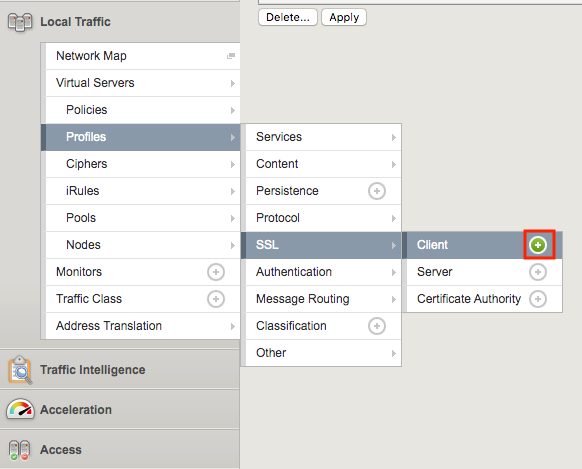
Enter the name client_certsso
Check the custom box to the right of Certificate Key Chain
Click add
Select acme.com-wildcard from the certificate dropdown box
Select acme.com-wildcard from the key dropdown box
Click Add
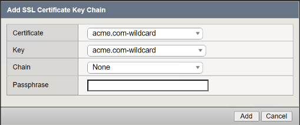
Check the custom box to the right of Client Certificate Constrained Delegation
Select Enabled from the Client Certificate Constrained Delegation dropdown box
Click Finished
Click Finished
Task 7 - Create a Server SSL Profile¶
Navigate to Local Traffic >> Profiles >> SSL >> Server, then click the + (plus symbol) to create a new SSL Profile
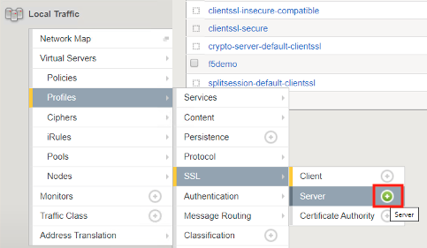
Enter server_certsso for profile name
Change the Configuraiton from Basic to Advanced via the dropdown box.
Check the two custom boxes next to Certificate and Key
Select F5CertSSO.f5lab.local.crt from the certificate dropbox box
Select F5CertSSO.f5lab.local.key from the key dropdown box
Check the custom box for Servername.
Enter the name mtls.acme.com
Check the custom box about the Client Certificate Constrained Delegation box
Select Enabled from the Client Certificate Constrained Delegation dropdown box
Select F5SubCA.f5lab.local.crt from the CA Certificate dropdown box
Select F5SubCA.f5lab.local.key from the CA Key dropdown box
Click Finished

Task 8 - Create the Pool¶
In this section you create a pool that contains the IP address of the CentOS server hosting the website requiring mTLS.
Navigate to Local Traffic >> Pools >> Pool List, then click the + (plus symbol) to create a new Pool

Enter mtls_pool for the Pool Name
Select https from the list of available monitors
Enter 10.1.20.9 for the member address
Enter 443 for the member port
Click add
Click Finished
Task 9 - Create a Virtual Server¶
Navigate to Local Traffic >> Virtual Servers >> Virtual Server List, then click the + (plus symbol) to create a new virtual Server

Enter mtls_vs for the Name
Enter 10.1.10.105 for the DestinationAddress/Mask
Enter 443 for the Service Port
Select http for HTTP Profile (Client)
Select client_certsso from the SSL Profile (Client) List
Select server_certsso from the SSL Profile (Server) List
Select Auto Map from the Source Address Translation dropdown Box
Select cert_sso from the Access Profile dropdown Box
Select the irule Cert_SSO
Select mtls_pool for the Default Pool
Click Finished
Note
The following iRule must be used when inserting custom extensions using C3D.
1when SERVERSSL_CLIENTHELLO_SEND {
2 set username [ACCESS::session data get "session.logon.last.username"]
3 set domain [ACCESS::session data get "session.ad.last.actualdomain"]
4 SSL::c3d extension 1.1.1.1 "Minted Extension=$username@$domain"
5}
Task 10 - Test CertSSO¶
In this section, you will test access to an NGINX website requiring mTLS.
From the jumpbox’s web browser, access https://mtls.acme.com
- Use the following credentials:
- Username user1
- Password: user1
- OTP: 123456

You will be logged into the site as User1.
Note
The contents of the certificate used for logging into the website was the CertSSO certificate copied into Per-Session Policy. The iRule that was attached inserted the custom extension 1.1.1.1 with the value of the user’s logon name. Notice that the Subject Name is CertSSO, the Subject Alternative Name is empty, and the custom extension is user1@f5lab.local.
- Cert Subject: f5certsso
- Subject Alt: <empty>
- Custom Ext: user1@f5lab.local
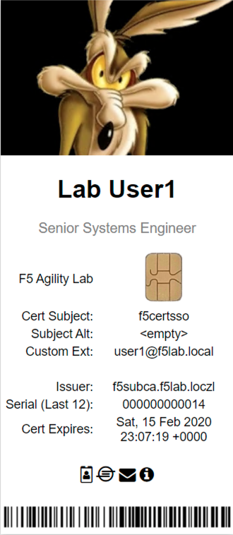
Open a new incognito browser window so you can test access to https://mtls.acme.com with different user credentials.

- Use the following credentials:
- Username user2
- Password: user2
- OTP: 123456
You will be logged into the site as user2@f5lab.local
Note
Notice that user2’s Cert Subject is the same as in User1, but the custom extension name is different (now user2@f5lab.local).
- Cert Subject: f5certsso
- Subject Alt: <empty>
- Custom Ext: user2@f5lab.local
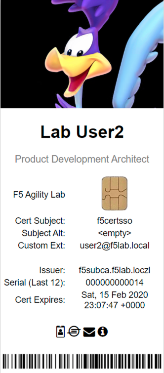
Task 11 - Create an HTTP Connector Transport¶
Navigate to Access >> Authentication >> HTTP Connector >> HTTP Connector Transport and click the + (plus symbol)

Enter Name demo-http-connector
Select internal-dns-resolver from the DNS Resolver dropdown
Select apiadmin-serverssl from the Server SSL Profile
Click Save
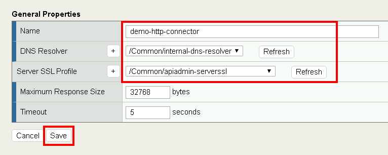
Task 12 - Create a HTTP Connector Request¶
Navigate to Access >> Authentication >> HTTP Connector >> HTTP Connector Request and click the + (plus symbol)
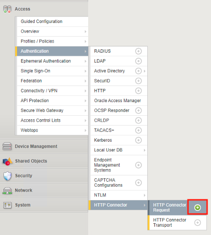
Enter name get-cert
Select demo-http-connector from the dropdown
Enter URL https://adapi.f5lab.local:8443/user/cert?username=%{perflow.username}
Enter GET for the Method
Select Parse for the Response Action
Click Save

Task 13 - Create a Per-Request Policy¶
Navigate to Access >> Profiles/Policies >> Per-Request Policies and click the + (plus symbol)

Enter the name certsso_prp
Select the Language English
Click Finished
Click edit under Per-Request Policy
Click Add New Subroutine

Enter the name Request Cert
Click Save
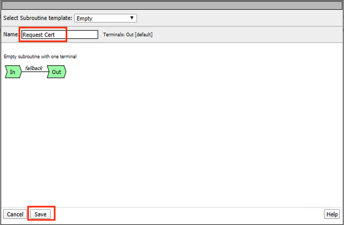
Expand the subroutine by click the + (plus symbol)
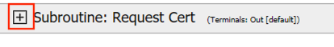
Click the + (plus symbol) on the fallback branch.

Click the General Purpose tab
Select HTTP Connector
Click Add Item
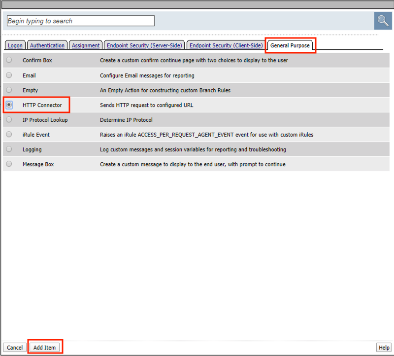
Select get-cert drop the dropdown

Click Edit Terminals
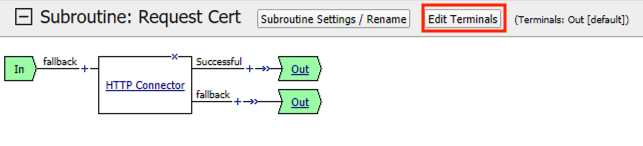
Click Add Terminal
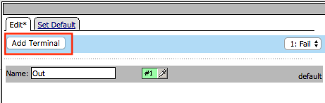
Change the name for the default branch to Fail
Change the default branch text to Red
Enter the name Success for the new branch
Change the color of the new branch to Green
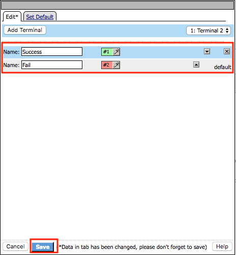
Click the Fail terminal at the end of the Successful branch
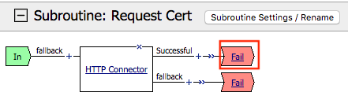
Select the Success terminal
Click Save

Click the + (plus symbol) on the successful branch
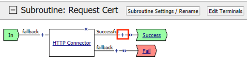
Click the Assignment tab
Select Variable Assign
Click Add Item

Click Add new entry
Click change

Enter session.ssl.cert.whole for the Custom Variable
Select Session Variable from the dropdown
Enter subsession.http_connector.body.certificate for the Session Variable
Click Finished
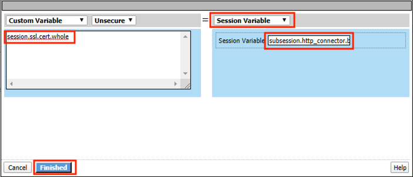
Click Save
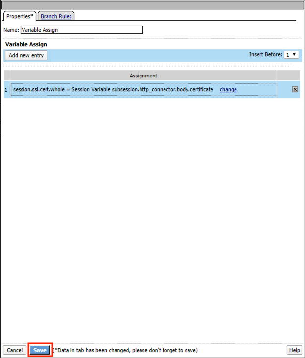
Click the + (plus symbol) located between Start and Allow in the policy
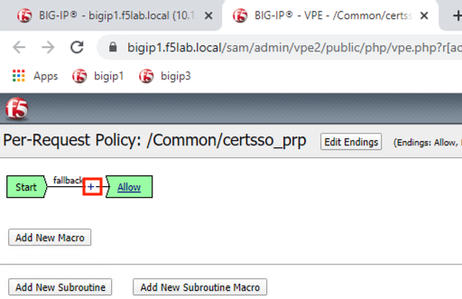
Click the Subroutines tab
Select the Request Cert subroutine
Click Add Item
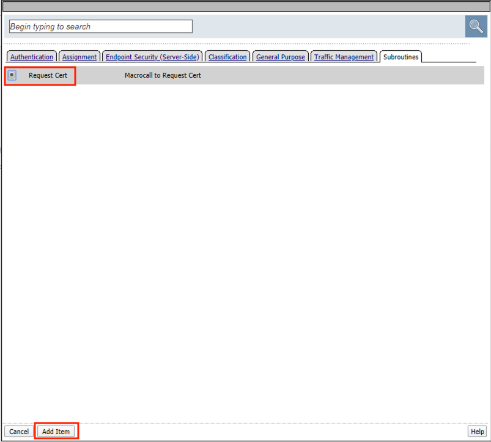
Click the + (plus symbol) on the success branch of Request Cert
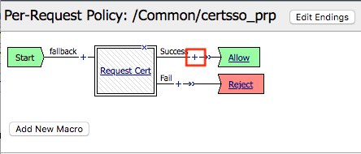
Click the General Purpose tab
Select irule Event
Click Add Item
Note
This iRule event triggers the code from the previously attached iRule. This iRule must be used when inserting a certificate using C3D in a per-request policy.
1when ACCESS_PER_REQUEST_AGENT_EVENT {
2 set cert [ACCESS::session data get {session.ssl.cert.whole}]
3 log local0. "My cert: $cert"
4 SSL::c3d cert [X509::pem2der $cert]
5}
6
7
8|image080|
Enter lab for the ID
Click Save
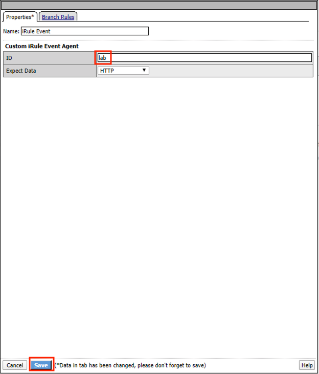
Task 14 - Attach the PRP to the mTLS Virtual Server¶
Navigate to Local Traffic >> Virtual Servers. Click Virtual Server List

Click mtls_vs
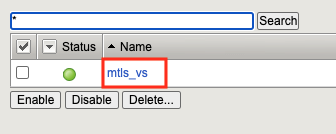
Navigate to the Access Policy section and select certsso_prp from the Per-Request Policy dropdown
Click Update

Task 15 - Access mtls.acme.com with Dynamic Certificate¶
From the web browser on the jumphost, access https://mtls.acme.com
Use the following credentials: - Username: user1 - password: user1 - OTP: 123456
You will be logged into the site as user1@f5lab.local
Note
The contents of the certificate used for logging into the website were from certificate retrieved via HTTP connector in Active Directory. The irule continues to insert the custom extension 1.1.1.1 with the value containing the user’s logon name. Notice the Subject Name is user1, the Subject Alternative Name is user1@f5lab.local and the custom extension is user1@f5lab.local
- Cert Subject: user1
- Subject Alt: user1@f5lab.local
- Custom Ext: user1@f5lab.local
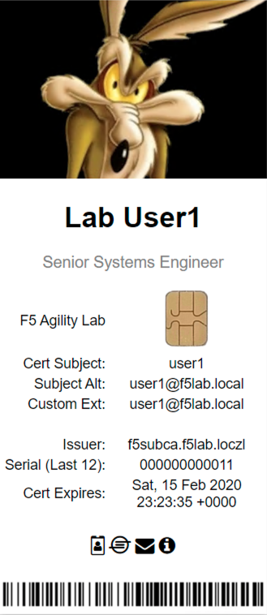
Open a new incognito browser window so you can test access to mtls.acme.com with different user credentials.
Use the following credentials:
- Username: user1
- password: user1
- OTP: 123456
You will be logged into the site as user2@f5lab.local
Note
Notice that user2’s Cert Subject is now user2 and the subject alt is user2@f5lab.local. The irule continues to insert the custom extension.
- Subject: user2
- Subject Alt: user2@f5lab.local
- Custom Ext: user2@f5lab.local
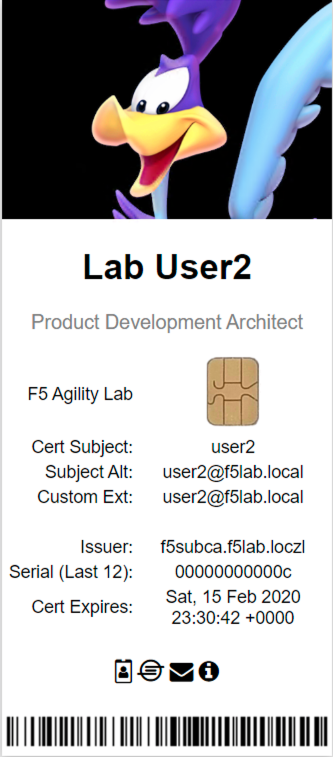
This concludes our lab on APM C3D Enchancements

{kind=link}
{kind=link}
{kind=link}
{kind=link}
{kind=link}
{kind=link}
{kind=link}
{kind=link}
{kind=link}
{kind=link}
{kind=link}
{kind=link}
{kind=link}
{kind=link}